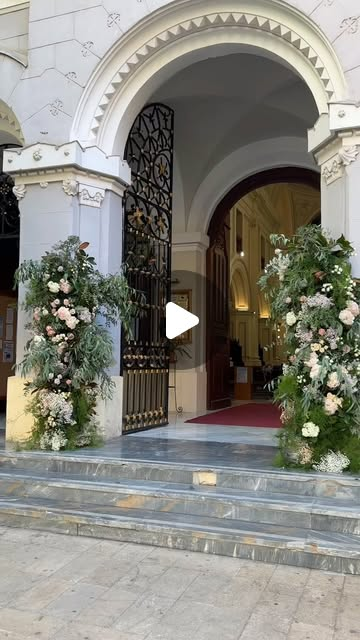
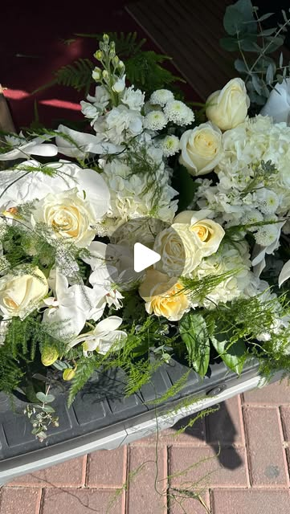
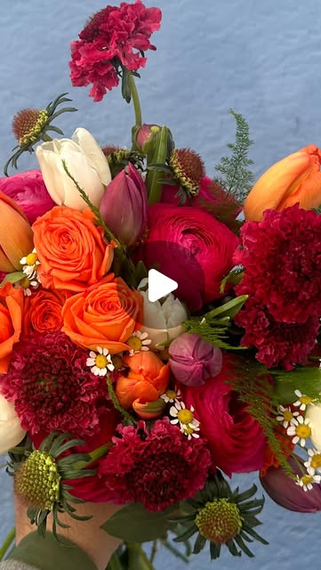

Floristería boutique · Murcia
Flores que no decoran. Construyen una escena.
Ramos, detalles florales y bodas con una dirección visual más editorial: color, textura, movimiento y una presencia que se recuerda.



Para parejas, regalos y espacios que necesitan algo más que “un ramo bonito”. Una floristería con lenguaje propio: tropical, sensible y contemporánea.
Bodas & eventos
Diseño floral con intención fotográfica.
Ramos de novia, prendidos, centros, ceremonia, seating y rincones con una línea visual coherente.
La propuesta puede nacer desde vuestro vestido, paleta, localización o moodboard. El resultado: flores que acompañan la historia y quedan bien en cámara.
Encargos rápidos
Un bot de WhatsApp sencillo para vender sin fricción.
La web puede lanzar un flujo guiado con mensaje pre-rellenado: fecha, presupuesto, ocasión, estilo y dirección. Más adelante se puede conectar con WhatsApp Business API / ManyChat / Make para automatizar respuestas.
Instagram real
Material visual de @tropicalgardenestudio
C. Pío XII, 25 · Murcia